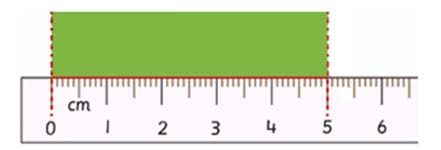
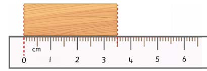

Measuring length in centimetres and millimetres
Measurements in centimetres and millimetres are used more often when object are measured by using a ruler. One centimetre is equal to ten millimetres. The smallest measurement unit of a ruler is the millimetre.
Example 1
What is the length of the piece of cloth in the following picture?

Answer
The length of the piece of cloth is 5 cm.
Example 2
What is the length of the piece of wood in the following picture?

Answer
The length of the piece of wood is 3 cm and 5 mm.
Exercise 1
Measure the length of each object in cm and mm from the following list.
1. Table
2. Desk
3. Pencil